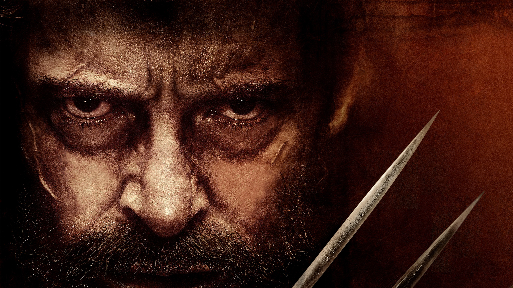

Logan
Dark, depressing and hauntingly beautiful
Date: 23rd June 2017
SPOILER ALERT: This post is meant to be a collection of my thoughts after I watched the movie. It's not intended to be a review piece.
We live in a world where our attention span is unbelievably short. Every few mins, we're distracted by a beep, a vibration, some form of notification which keeps us "informed" about people we don't care about and stuff we don't need. I can hardly recollect a time in the last couple of years when I watched a movie without getting distracted. But Logan got my attention. My eyes were transfixed on the small screen as I sat uncomfortably in the middle seat of a metal tube hurtling across the Canadian wilderness. In my heart of hearts, I knew how it was going to end. Yet I couldn't take my eyes of the screen. I wanted to give the movie my undivided attention.
In the very first scene, you see a bruised, beaten up, older wolverine who's fangs malfunction. He's not as quick as he once was, the adamantium is poisoning him from within, and his body is not able to recover fully from the brutal attacks. He's bitter and cynical on the outside, but you still see glimpses of the good man within.
Charles Xavier is an nonagenarian now and fighting with a debilitating case of some brain disease (Alzheimer's?). He sometimes doesn't recognize Logan and needs round the clock care. There are several beautiful scenes where he loses control over his powers (whenever he has a stroke) and causes temporary paralysis in humans around him. He's struggling to cope with the fact that he's responsible for the deaths (considerable chunk of x-men) and numerous injuries caused by his first stroke induced power surge. Though Charles seems like a liability at first, he is the only connection to Logan's past. In his lucid moments, he reminds Logan of better times.
The killing machine we saw in Wolverine is now gone (Well, he still does a lot of damage. But doesn't walk away unscathed). All we have left is the broken, battered Logan. He's slower, some of his injuries leave lasting damage; he's no longer the immortal, spandex-clad badass. Almost every person he knew and loved are dead. The only family he's got left is the wise, kind Charles Xavier. And his (Charles) days are numbered. Logan is exhausted from all the running and killing in his life. He's starting to believe that there's no meaning in life and he knows that Charles is disappointed with him. Logan doesn't want any trouble, he just wants to fade away in peace. Here's where the young mutant Laura comes in. He comes to realize that she's his little daughter. Transigen chemicals are in the business of making mutant killing machines and they used Logan's DNA to create Laura in an off-the-grid lab facility in Mexico.


The little girl Laura (Logan's daughter) is absolutely stunning throughout the movie. She's the last whiff of fresh air in Logan's cruel world. Charles knows that, he wants Logan to find meaning in his life. But our beloved wolverine keeps his distance. He doesn't get too close. He knows. He knows that anyone he cares about get hurt. He just wants to die. The adamantium bullet which once existed to remind him of who he was is now his escape route. He's one step away from blowing his fuckin brains out.
After long-winded, dangerous high speed chases, the trio (Logan, Laura and Charles) end up staying with a nice suburban family. If I'm not mistaken, this is the first scene where they are all laughing and having a good time. But this semblance of normalcy is almost immediately disrupted by a surprising turn of events which end with Charles getting killed and Laura & Logan barely getting out in one piece. At this point, Logan is ready to just go and die. There's a beautiful scene (after Charles's burial) where he breaks down after the truck won’t start - it shows us what really happens to a man who has literally watched all his friends die. It shows how vulnerable he is in reality.
While the emotional aspect of the movie gets the viewers completely invested, the mix of realism adds an element of uncertainty which always keeps you on the edge of your seat. For instance, when Logan, Charles and Laura are trying to escape from the assasins, their limo can’t crash through a fence. Any other film would allow the vehicle to dramatically plow though it. However, Logan isn’t like “any other film”.

Brilliant comic by Yehuda Devir which perfectly captures my emotional state.
The rest of the storyline is Logan trying to get Laura to a safe haven. He doesn't really want to do it. But something tugs his heart. Initially it's because of the nurse Gabrielle, then because Charles Xavier wants him to. We can see Logan struggle to cope with his feelings for Laura. He wants to protect his daughter, yet he doesn't want her to get hurt because she's with him. The climax sequence where he runs uphill to protect her is quite brilliant. Especially the scene where Logan is dying and says "So this is what it really feels like..." with a sobbing Laura calling him Daddy for the first time. The kid in me just died in that moment. I wanted to curl into a ball and sob like a baby. Just cry my eyes out.
Logan is not for the kids who still have some semblance of innocence left in them. It's not for the ones who are looking for a popcorn-flick filled only with gravity-defying stunt sequences (P.S: The movie has gory, jaw-dropping fight sequences). Logan is for all the kids who grew up watching/reading X-men. It's one hell of a last ride. Somewhere between watching Wolverine flirt with Jean grey and die for Laura, I grew up
To Hugh Jackman and James Mangold (the director), all I could muster is "Thank you...". Words fail to convey the motley of emotions I'm going through. I'd be indebted to you forever for this unforgettable experience.
Signing off,
Gautham Vasan
On a sidenote:
As I kept watching the tragedy unfurl in all its glory, I was strangely reminded of Viktor Frankl's classic work - "Man's search for meaning in life". He talks about 3 kinds of meaning you can find in life -
- You find meaning in your work and skills. You're work gives you satisfaction and pleasure. Maybe you're only one who could do that sort of work
- You cherish the time you spend with your loved ones (friends and family). They mean the world to you and you'd do anything to protect them and keep them happy
- You find meaning in your suffering. Call it karma, call it spirituality or whatever religion/god you believe in. You face every knock out punch life throws at you like a man and get back on your feet just in time for life to drop kick you to the ropes again.